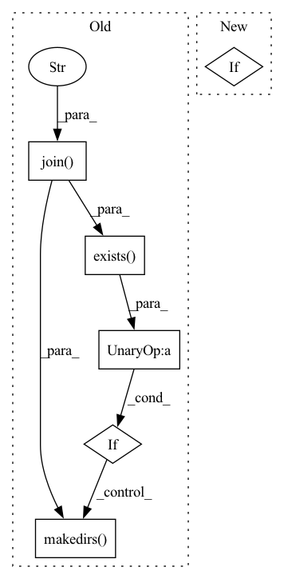

Pattern ID :3631
Before Change
rng, tune_config_updates = setup_run(config)
del config // I want a new name for it
repl_dir = os.path.join( up(up(log_dir)), "all_repl" )
if not os.path.exists(repl_dir) :
os.makedirs( repl_dir)
// Run representation learning
repl_hash = hash_config(rep_ex_config)
pretrained_encoder_path = None
After Change
pretrained_encoder_path = os.path.join(most_recent_run, "repl_encoder.ckpt")
logging.info(f"Loading encoder from {pretrained_encoder_path}")
if pretrained_encoder_path is None:
tune_config_updates["repl"].update({
"seed": rng.randint(1 << 31),
})In pattern: SUPERPATTERN
Frequency: 3
Non-data size: 6
Instances Fragment ID: 13663463
Project Name: humancompatibleai/eirli
Commit Name: 6b9afb91f6ab432d773a3878a4c44d6b69d10c8d
Time: 2020-12-30
Author: codywild@berkeley.edu
File Name: src/il_representations/scripts/pretrain_n_adapt.py
M Class Name: AnonimousClass
N Class Name: AnonimousClass
M Method Name: run_end2end_exp(8)
N Method Name: run_end2end_exp(8)
M Parent Class:
N Parent Class:
M File Name: src/il_representations/scripts/pretrain_n_adapt.py
N File Name: src/il_representations/scripts/pretrain_n_adapt.py
M Start Line: 277
M End Line: 312
N Start Line: 269
N End Line: 300
Before Change
@pytest.fixture(scope="session")
def global_local_config():
target = os.path.join( test_data_dir, "ckpoint" )
if not os.path.exists(target) :
os.makedirs( target)
config = LocalConfig(checkpoint_dir=target, input_data=test_data_dir / "data" / "smol.txt")
annotate_training_data(config)
yield config
shutil.rmtree(target)After Change
def global_local_config():
target = test_data_dir / "ckpoint"
input_data = test_data_dir / "data" / "smol.txt"
if not target.exists():
target.mkdir()
config = LocalConfig(checkpoint_dir=target, input_data=input_data)
annotate_training_data(config) Fragment ID: 13663464
Project Name: gretelai/gretel-synthetics
Commit Name: 8af17403dfa595b5dceb08e387dcaf2d80b92f29
Time: 2020-03-23
Author: zredlined@users.noreply.github.com
File Name: tests/conftest.py
M Class Name: AnonimousClass
N Class Name: AnonimousClass
M Method Name: global_local_config(0)
N Method Name: global_local_config(0)
M Parent Class:
N Parent Class:
M File Name: tests/conftest.py
N File Name: tests/conftest.py
M Start Line: 15
M End Line: 18
N Start Line: 13
N End Line: 17
Before Change
if load_path != "":
self.load_snapshot(load_path)
import torch
save_dir = os.path.join("/home/xf/imitation_teaching" , "data", "expert_model", "Seaquest-v4")
if not os.path.exists(save_dir) :
os.makedirs( save_dir)
print(save_dir)
torch.save(self.agent.q_network, os.path.join(save_dir, "q_network.pt"))
//exit(0)
After Change
self.max_epoch = max_epoch
self.epsilon_sheduler = Scheduler(**kwargs["epsilon"])
self.warmup_timesteps = warmup_timesteps
if load_path != "":
self.load_snapshot(load_path)
Fragment ID: 13663465
Project Name: x35f/unstable_baselines
Commit Name: 4f0036392d4f35e65516efa47407b0cfbe05eb81
Time: 2023-01-16
Author: 1621322691@qq.com
File Name: unstable_baselines/baselines/dqn/trainer.py
M Class Name: DQNTrainer
N Class Name: DQNTrainer
M Method Name: __init__(11)
N Method Name: __init__(11)
M Parent Class: BaseTrainer
N Parent Class: BaseTrainer
M File Name: unstable_baselines/baselines/dqn/trainer.py
N File Name: unstable_baselines/baselines/dqn/trainer.py
M Start Line: 26
M End Line: 40
N Start Line: 28
N End Line: 32